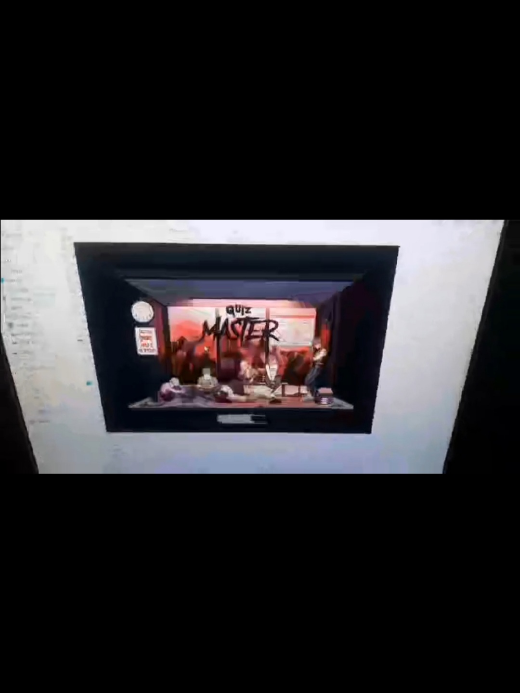
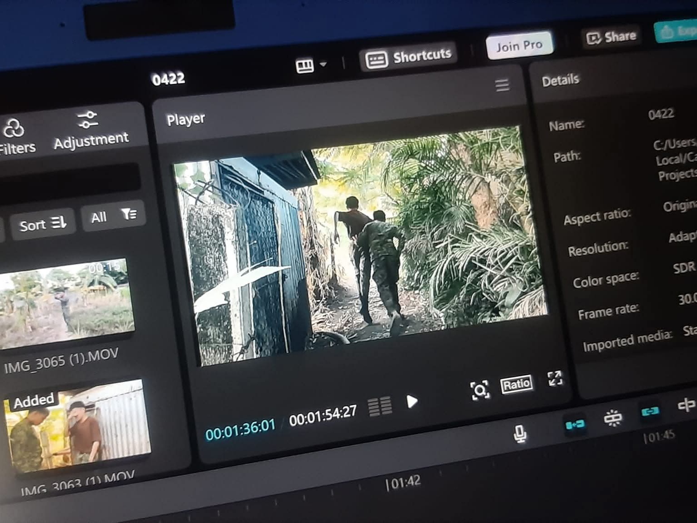
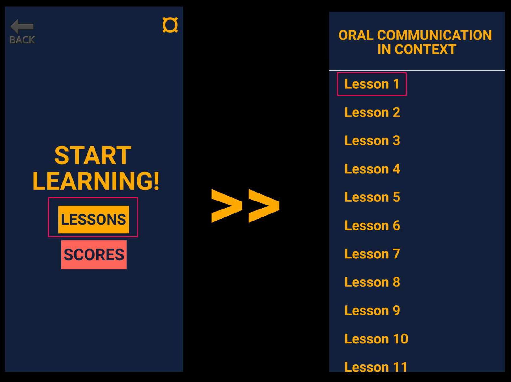

An Aspiring Developer
I am a first-year BS Information Technology student at the Laguna State Polytechnic University in San Pablo City, Laguna. I have a strong passion for technology and creative problem-solving, particularly in web development and digital arts. Outside of academics, I enjoy exploring various forms of storytelling, such as reading, writing, and creating digital illustrations. I am also deeply curious about controversial topics and love conducting research to gain a deeper understanding of complex ideas. My goal is to combine my technical knowledge with my creative interests to build meaningful and innovative projects in the future.

A computer-based Quiz Master application for Earth and Life Science, developed using Visual Studio Basic.

This project involved editing an action short film, which won several awards in school for its creativity and technical execution.

An Android Quiz Master application for Oral Communication and Context, developed using Android Studio.
Email: 0325-1209@lspu.edu.ph
Phone: +63 994 464 4027
Address: San Gregorio SPC Laguna
Social Links